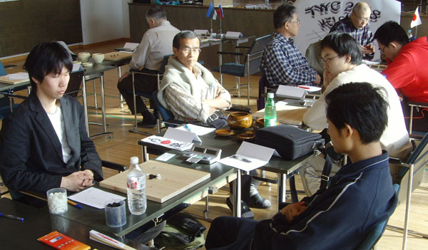
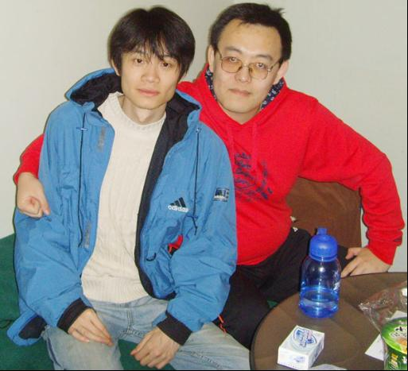

【2008世界连珠团体赛】曹冬：刻骨铭心超时负
#1 【2008世界连珠团体赛】曹冬：刻骨铭心超时负 作者：有志青年 发表时间：2008-6-19 7:57:50
#2 【2008世界连珠团体赛】曹冬：刻骨铭心超时负 作者：有志青年 发表时间：2008-6-19 8:11:18

第三轮中国对阵日本
=======上图对应的爱五子棋谱代码如下，以便你拆解：========
h8h9h7h6g9i7j8g8j10i5j9j11i10i8i6j7g10h10h11g12i12j13i11i13k9l8k11l5k6i9l10m10m9n8l12k12l11l9m11n12n11o11l13l14m13
======================================================
曹冬（白）V饭尾义弘（黑） 曹冬负
第三轮我对阵日本的老将饭尾义弘。我还是开出松月局，老饭尾交换后打出一打和二打，当时我有点意外，因为查阅他最近的棋局，打得都是三打，看他主动求变了。
当时第一感觉二打对黑太容易了，黑想输都难。于是心态就坏掉了，带着侥幸心理考了他一个古老的白10，事后想想14还不如先在g7活三，黑胜的下法还是要比这个复杂不少。
虽然16后黑每步棋都正确应对，我基本都不在自己座位看棋了，这盘棋没什么好评论的，黑棋下出了正确的胜法，可以做为初学者的教材。
虽然赛后吴昊安慰我说骗着就是赌，输赢几率各半。但我想这盘败局还是拖了中国队的后腿，当时心里很难受，通过这盘棋我也认识到应该认真应对每一个棋手，高手之间心存侥幸是很危险的。

与吴镝在一起
=======上图对应的爱五子棋谱代码如下，以便你拆解：========
h8h9h6g10g6g9i9i8f11g7g8e7h10f9d7g11d9f6g5d8f7h5e6f5k6k7g3f4f3g2i12g12g13k11k9j9j11k10l11j6j7l8m9k12f13h13c8c10c9b7b9a10e9a9i5i3l7m8
======================================================
曹冬（白）V泰姆拉•图耐特（黑） 和棋
第四轮我对爱沙尼亚的泰姆拉·图耐特，中国棋手习惯叫他坦克。坦克曾经获得世锦赛个人冠军，虽然没在正式大赛中和他相遇，但我们在网络上有过交手，给我的感觉是他现在的棋风没有小时候那么犀利了，这与我对中国少年天才棋手胡愈的感觉相似。
坦克开出了平稳的瑞星局，意在立足于不败，因为当时的形势是只要爱沙尼亚1队不输给中国队，那么后面两个队都有机会。
和高手过招首先立足于不败，我选择了最稳健的白12，实战13是较为常见的下法，但我想坦克选择了这个13，更是因为在前面几轮中这个13以和棋居多，比如第二轮吴昊和俄罗斯的琴晋的对局，黑白双方都没有什么好的机会，最后成和。
实战到白22都是非常流行的定式，黑白都不好求变。22后黑棋还是牢牢控制住先手，黑25，也是很好想的一手棋，我回忆起这正是琴晋下的那个25，难道坦克要学琴晋了？
果然不出所料，一直到黑33，坦克都是在照抄，难道他们回去又细拆了？由于对22后的一系列变化我也不是很熟知，索性我照抄吴昊，先立足于不败。
坦克选择了这样一路趋向于和棋的变化，可见当时他们策略就是逼和中国队，后来我观看那三盘棋的下法，也验证了这一观点。
坦克终于停止了抄袭，实战很快下出35，很明显是有备而来了，我不敢怠慢，仔细计算了黑35带来的这个眠三的威胁，我发现由于有了27,29这个活二的存在，黑棋右下面有一系列攻击和做杀的手段，但最后都不能取胜，于是选择了36这手脱先的进攻，通过后面的进程，证明这个36的效果确实不错。
坦克开始长考，他一定是在计算下方黑棋是否有胜，20分钟后，坦克摇了摇头，37无奈的防了过来，38,40,42白这三手我感觉效率都不错，打开了些局面，41无奈唯一防，44我开始长考，明明黑下面有些优势的棋，反倒成了白的领地，由于时间已经紧迫，粗略的算了下白右下似乎是做不死的，一旦白做不出VCT，被黑脱先，也有一定危险，而且当时也没有计算清楚黑如果以后脱先占到k12，是否能把白做死。
最终我还是做出了求稳的定，下出了分水岭的44，44一下出就基本是和势了。
白如果再想拿回先手就很难了，此后黑棋试探性的攻了几手，但终因素材不够，也不能取胜，58后我在时间紧迫的情况下提和，坦克很快同意了。
虽然事后看白44没有在下面攻很可惜，枉费了36的好手段，但由于刚刚马失前蹄，也不敢贸然行事，毕竟